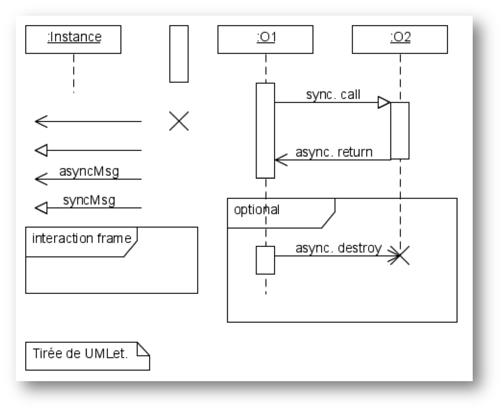
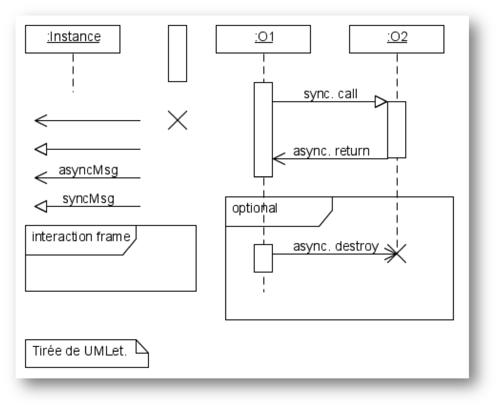
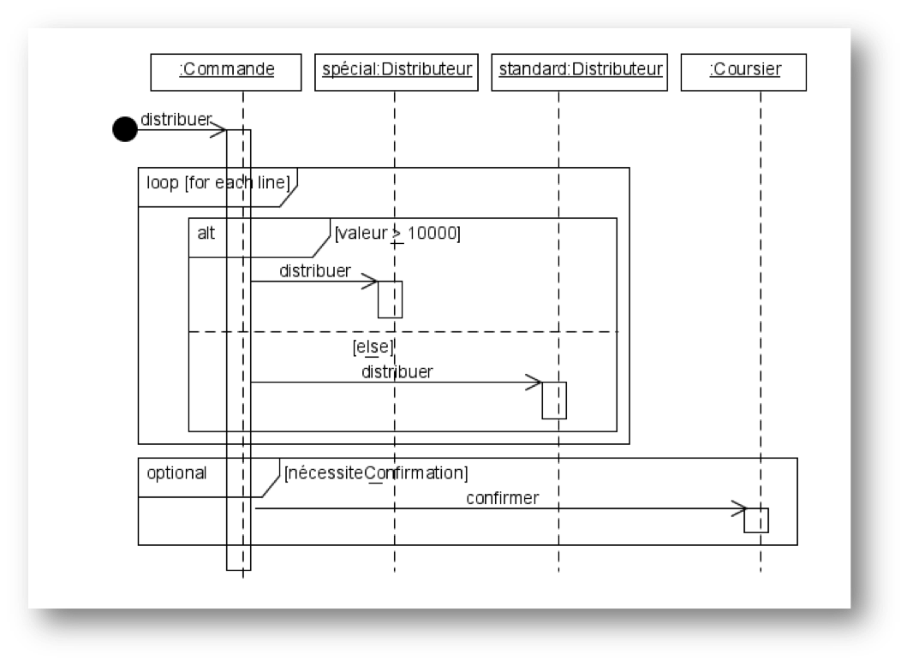
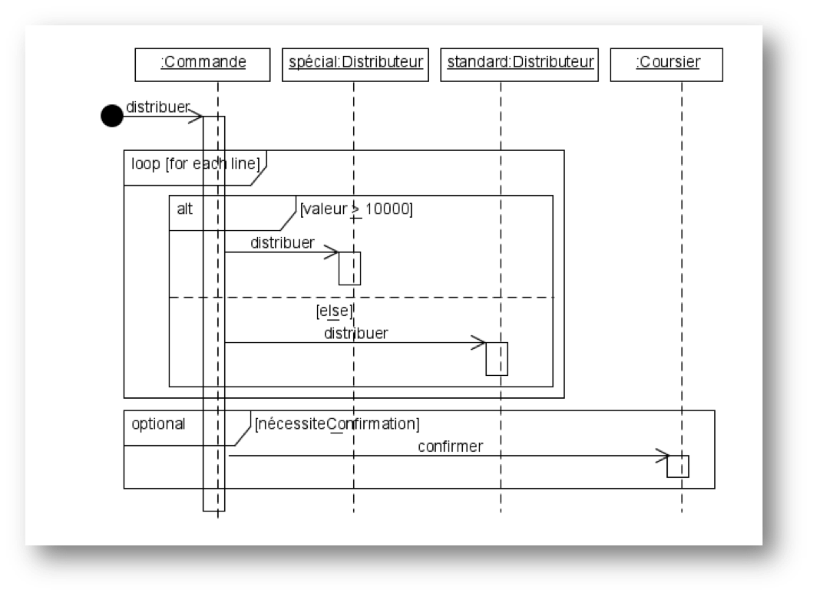
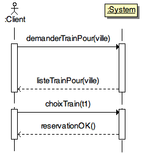
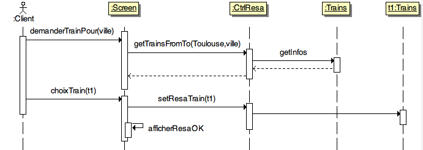

1. Avant-propos
1.1. À qui est destiné ce document?
Les étudiants du DUT informatique, mes collègues enseignants qui cherchent un document de référence accessible, et … moi-même (pour organiser mes notes diverses)!
1.2. À qui il n’est pas destiné?
Si vous appartenez à une de ces catégories, ce document n’est pas pour vous :
1.3. Historique
Ce document est tout nouveau (date de naissance 05/09/2014!), donc merci de votre indulgence …
Vous trouverez en référence (cf. Bibiliographie) les ouvrages et autres documents utilisés.
1.4. Sur l’auteur
-
Professeur à l’http://www.univ-toulouse.fr[Université de Toulouse], en poste à l’http://www.iut-blagnac.fr/[IUT de Blagnac]
-
Co-fondateur de l’association SysML-France
-
Membre du comité éditorial de la revue SoSyM
-
Membre du Steering Committee de la conférence ACM/IEEE MODELS
-
Chef du département informatique de l’http://www.iut-blagnac.fr/[IUT de Blagnac] 2009 à 2012
-
Responsable de l’ancien module (Analyse et Conception des Systèmes d’Information)
-
Marié à une merveilleuse femme, papa d’une merveilleuse fille
et…
-
Ancien étudiant du Professeur Benzekri :-)
1.5. Comment lire ce document?
Ce document a été réalisé de manière à être lu de préférence
dans sa version électronique (au format HTML ou PDF), ce qui permet de
naviguer entre les références et les renvois interactivement, de consulter
directement les documents référencés par une URL, etc.
|
|
Si vous lisez la version papier de ce document, ces liens clickables ne vous servent à rien, et c’est votre punition pour avoir utilisé du papier au lieu du support électronique! |
1.5.1. Conventions typographiques
J’ai utilisé un certain nombre de conventions personnelles pour rendre ce document le plus agréable à lire et le plus utile possible, grâce notamment à la puissance d’http://www.methods.co.nz/asciidoc[AsciiDoc] :
-
Les références bibliographiques présentées en fin de document (cf. Bibliographie).
-
Les termes anglais (souvent incontournables) sont repérés en italique, non pas pour indiquer qu’il s’agit d’un mot anglais, mais pour indiquer au lecteur que nous employons volontairement ces termes (e.g., Package).
Le titre des figures indique (entre parenthèses)
un M pour les figures issues de Modelio,
un MD pour les figures issues de MagicDraw,
un P pour les figures issues de plantUML,
un Py pour les figures issues de Papyrus,
un R pour les figures issues de Rhapsody,
un T pour les figures issues de TOPCASED,
un Y pour les figures issues de yuml,
et un UK pour les figures en anglais.
Pour les notes, conseils, avertissements, etc. voici la liste des pictogrammes utilisés :
|
|
Les notes comme celles-ci sont utilisées pour indiquer des éléments intéressant pour la majorité des lecteurs. |
|
|
Ces notes indiquent des points importants qui réclament votre attention. |
|
|
Celles-ci concernent en général des points de détail et permettent "d’aller plus loin". |
|
|
Définition : Exemple (OMG UML v2.4.1, p. 152)
Ces notes concernent des définitions tirées de la spécification UML™ et sont donc précisément référencées. |
|
|
Modélisation UML incorrecte. |
|
|
Modélisation UML partiellement correcte ou pouvant prêter à confusion. |
|
|
Modélisation UML correcte. |
1.6. Pourquoi parler de "document"?
Parce que j’ignore la version que vous êtes en train de lire. À partir de l’original, plusieurs versions ont été générées grâce à AsciiDoc :
-
Une version pour le web (Moodle) au format html
-
Une version pour présentation en amphi au format présentation
-
Une version pour impression au format pdf
1.7. Utilisation et autres mentions légales
Les images qui ne sont pas libres de droit contiennent un lien vers les sites où je les ai "empruntées".
N’hésitez pas à m’envoyer vos remarques en tout genre en m'écrivant ici.
1.8. Contenu, objectifs et pré-requis
À faire en dynamique…
1.9. Supports de cours et matériel
- Format des cours
-
Journées (9h-12h / 14h-17h a priori)
- Supports
-
Pour l’instant : http://jmbruel.heroku.com/teaching/PLM/main.html
- Volume
-
30h (5 jours)
2. Première partie : modéliser (J1)
2.1. Modéliser c’est quoi ?
2.1.1. Définir un langage de modélisation
2.1.2. Langages
Pour communiquer il faut un (ou plusieurs) langage(s) :
-
Un modèle (M) n’est pas un langage

Peut être la description d’un langage -
Un méta-modèle (MM) non plus
2.1.3. Langage, syntaxe, sémantique
Un langage consiste en :
-
une notation syntactique
-
un ensemble d’éléments légaux (combinaison, éventuellement infinie, des termes de base de la notation)
-
une interprétation pour ces termes
- Syntaxe
-
ensemble des règles de bon agencement des éléments d’une notation
- Domaine sémantique
-
ensemble des interprétations possible pour la notation (« univers du discours »)
- Sémantique
-
« mapping » de la syntaxe vers le domaine sémantique
|
|
Les 3 éléments de définition d’un langage ont besoin d’être représentés ⇒ 4ème langage parfois! ⇒ différentes couches (e.g., lettres, mots, phrases,…) |
2.1.4. Syntaxe
-
Exemples
-
Mots, phrases, déclarations, boîtes, schémas, termes, modules, …
-
-
Différents types
-
Graphique
-
Textuelle
-
Abstraite
-
Concrète
-
-
Langage pour la représenter
-
Textuelle ⇒ grammaire
-
Graphique ⇒ graphes
-
2.1.5. Sémantique
-
Opérationnelle
-
suite d'états et de transitions entre ces états
-
-
Dénotationnelle
-
fonction mathématique qui fait passer d’un état (entrée de la fonction) à un autre (sortie)
-
-
Axiomatique
-
propriétés logique sur les états
-
2.1.6. Modèle
-
Représentation d’un système
-
créé dans un certain objectif
-
utilisé éventuellement pour prédire ou analyser son comportement
-
-
Description vs. Spécification
-
Description ⇒ système existant
-
Spécification ⇒ système attend
-
-
Représentation ⇒ relation système/modèle
Objectifs :
-
Appréhender la complexité des systèmes
-
Découpler les considérations
-
Formaliser les éléments intuitifs
-
Dialoguer (interne à l’équipe mais aussi externe)
Différents et nombreux :
-
Instants du cycle de vie
-
Niveau d’abstractions
-
Considérations (vues)
⇒ multiplicité des modèles
Exemple d’UML :
-
Modèles de comportement
-
Modèles des besoins
-
Modèles des données
-
Modèles des communications
-
…
Notation formelle pour la représentation :
⇒ notion de conformité
⇒ notion de méta-modèle
2.1.7. Méta-modèle et niveaux
2.1.8. Importance de la modélisation en informatique

3. Fondements
Pour mener à bien le développement d’un système informatique industriel ou commercial, on ne peut pas improviser. Il s’agit d’un travail impliquant un grand nombre de personnes, des enjeux financiers souvent énormes. Le but de ce cours est de vous faire prendre conscience de cet état de fait autant que de vous donner les différentes techniques liées à cette activité. Au nom de quoi pouvez-vous avoir confiance dans les conseils présentés dans ce cours? Il ne faut pas justement! Il vous faut sans arrêt questionner, remettre en cause les idées reçues.
L’objectif de ce cours est d’aborder la problématique du développement raisonné (de qualité, sûr, rapide, pas cher, etc.) de systèmes. La méthode choisie est celle des études de cas et des applications concrètes.
Les concepts abordés peuvent se classer en différents niveaux [gram86] :
- stratégies
-
règles de comportement général guidant les choix du développeur (par exemple, obtenir le plus rapidement possible un énoncé exécutable relève de la stratégie "prototyper").
- tactiques
-
décrivent des étapes logiques de développement conduisant à un énoncé possédant certaines propriétés (par exemple, passer d’un énoncé imprécis à un énoncé totalement défini relève de la tactique "spécifier").
- paradigmes
-
sont des étapes élémentaires de la construction d’un programme (par exemple, expliciter une entité par un nom et une définition informelle revient à appliquer le paradigme "désigner").
3.1. Stratégies
On vous parlera ici de méthodes, de cycle de vie, de gestion de projet. Mais nous aborderons cela bien plus tard car dans un premier temps cela va être à la fois rébarbatif et très loin de vos préoccupations.
Pour l’instant retenons des principes simples :
-
Comprendre
-
S’organiser
-
Modéliser
-
S’adapter
3.1.1. Comprendre
Théoricien : individu qui n’est pas de votre avis.
— Auguste Detoeuf
Le problème, l’environnement, les outils à maîtriser, la solution attendue, le domaine métier, etc.
3.1.2. S’organiser
Vingt fois sur le métier remettez votre ouvrage : Polissez-le sans cesse et le repolissez ; Ajoutez quelquefois, et souvent effacez.
Dans les méthodes agiles on parle de "sprint 0". Il est important de bien s’organiser avant de foncer tête baissée dans le travail à proprement parlé.
Voici quelques éléments importants à aborder :
- Démarche globale
-
Quelle démarche allez-vous mettre en oeuvre (Merise, RUP, Agile, personnelle, …)?
- Rôles
-
Qui va faire quoi?
- Environnement
-
Quels outils allez-vous utiliser (modélisation, analyse, développement, test, documentation)?
- Versionnage
-
Il est très important, surtout dans un travail collaboratif, de bien utiliser un outil de gestion de version. Que ce soit pour le code (facile), la documentation (moins évident) ou les modèles (très difficile). Pour le code, le nombre de systèmes disponibles vous empêche d’avoir une excuse (Git,Subversion,Mercurial).
3.1.3. Modéliser
Ce que l’on conçoit bien s'énonce clairement. Et les mots pour le dire arrivent aisément.
Pour s’abstraire.
3.1.4. S’adapter
Se mettre à jour des techniques. Adapter sa façon de procéder au contexte (au poste que l’on occupe par exemple). Voir Améliorations.
3.2. Tactiques
Liste de tactiques :
-
spécifier
-
décomposition (d’un problème en sous-problème)
-
itération
-
induction (construire un énoncé récursif)
-
approximation (organiser la résolution d’un problème en étudiant d’abord un nouveau problème, considéré comme plus simple)
-
généralisation (formuler et résoudre le problème à un niveau d’abstraction plus général pour permettre ensuite un plus grand nombre d’identifications)
-
réutilisation (exploiter au mieux tout travail déjà fait, cf. aussi [DRY])
3.3. Paradigmes
Liste de paradigmes :
-
désigner
-
typer (décrire les proriétés pertinentes d’une entité)
-
affaiblir (transformer un énoncé pour en réduire la complexité)
-
renforcer (compléter un énoncé par des contraintes supplémentaires)
-
décomposer par cas (lorsqu’on distingue plusieurs traitements suivant les données du problème à un endroit donné)
-
sérialiser (pour définir un résultat, utiliser un résultat intermédiaire
xà partir des données, puis exprimer le résultat à partir dex) -
répartir (définir séparément un certain nombre de sous-résultats, qu’il s’agit ensuite de composer entre eux pour obtenir le résultat attendu)
-
identifier (identifier deux problèmes consiste à reconnaître leur identité au-delà des différences de forme de leurs énoncés)
-
paramétrer (faire abstraction des valeurs particulières de certaines entités, parce qu’elles ne sont pas pertinentes pour l'élaboration de la solution visée)
-
représenter (choisir, pour certaines entités, les types, les relations et le moyen d’expression adéquats)
Les tactiques sont des compositions de paradigmes. Ainsi, la mise en oeuvre de la tactique d’approximation consiste à appliquer le paradigme affaiblir, et le cas échéant le paradigme renforcer pour revenir au problème posé.
3.4. Le Manifeste Agile
Le Manifeste Agile (Agile Manifesto [HighsmithFowler2001]) est un ensemble de principes (voir aussi [1030005] pour une analyse plus récente).
Notre plus haute priorité est de satisfaire le client en lui livrant rapidement, et ce, de façon continue un logiciel de qualité.
À intervalles réguliers, l'équipe réfléchit sur une façon de devenir plus efficace, puis adapte et ajuste son comportement en conséquence.
4. La notation UML
4.1. Méthodologie de développement
Nous allons aborder les points suivants :
-
Pourquoi l’orienté objet ?
-
Pourquoi UML?
-
Processus de développement
-
Conception logicielle
4.1.1. Pourquoi l’orienté objet ?
-
Prendre en compte tout le système
-
Ce que fait le système + comment il est organisé pour le faire
-
Quelques concepts fondamentaux :
-
les objets
-
les messages
-
les classes
-
l’héritage et le polymorphisme
-
4.1.2. Pourquoi UML?
-
tout le cycle de vie :
-
visualisation
-
spécification
-
construction du système
-
documentation
-
-
synthèse des meilleurs aspects des méthodes courantes
-
standard mondial
4.1.3. Processus de développement
Activités de bases :
-
Expression des besoins
-
Identification de l’environnement et du contexte
-
Planification
-
Analyse
-
Conception
-
Implémentation
-
Test
-
Révision
Plusieurs approches :
-
Cycle en cascade ("waterfall")
-
En spiral (Boehm)
-
Itératif (RUP, openUP)
-
Inception : évaluation initiale (risques, etc.)
-
Elaboration : architecture, principaux éléments
-
Construction : développement incrémentale
-
Transition : déploiement, formation
-
-
eXtreme Programming
-
ensembles de "principes"
-
4.1.4. Conception logicielle
Qu’est-ce qu’une bonne conception?
-
elle est conforme aux besoins fonctionnels / non-fonctionnels
-
elle est modulable et extensible
-
elle est compréhensible et vérifiable
-
elle est aussi simple que possible
Quelques éléments dans ce sens :
-
séparations des responsabilités (e.g., 3-tiers)
-
modularité
-
faible dépendance et forte cohésion
-
utilisation de standards (outils, langages et notations)
Notation pour la conception
-
Cas d’utilisation
-
Diagrammes de classe
-
Diagrammes d'état (statechart)
-
Diagrammes d’interaction (scénarios)
-
Diagrammes de séquence
-
Diagrammes de communication (collaboration)
-
Spécification des opérations et méthodes
-
Diagrammes de flux d'écran
-
Tables de décision
-
CRC
-
…
4.2. UML en résumé
-
Diagrammes
-
13 dans la version 2.0
-
-
Principes généraux
-
Mécanismes
-
paquetages
-
stéréotypes
-
étiquettes
-
notes
-
contraintes
-
4.3. Enchaînement des modèles
|
|
Nous utilisons dans ce cours la démarche mise en avant dans [Roques2007a]. |


4.4. Diagramme de classe
Nous souhaitons représenter les données manipulées par le système, ainsi que les relations entre ces données.

|
|
Nous parlons pour l’instant de classe, si vous êtes familié avec le langage C vous pouvez parler de structure. Pour l’instant considérons que les 2 sont équivalents. |
4.4.1. Concept de Classe
Une classe est une représentation unique servant à caractériser un ensemble d’objets jouant un rôle identique et décrits par les mêmes attributs.

|
|
Une classe n’est pas un ensemble d’objets! |
Afin de faciliter la lisibilité des diagrammes, il est d’usage d’adopter une certaine façon de nommer les différents éléments. Ceci permet d’avoir une homogénéité dans les différents diagrammes.
|
|
Exemple de convention d’écriture suivante :
|

4.4.2. Classes et objets
En programmation on parle de type et de variable. Même si c’est un raccourci très rapide
nous pouvons pour l’instant faire le parallèle entre les notions de classe et d' objet.
On parlera toutefois d'instance pour désigner un objet issu d’une classe.

4.4.3. Attributs
Un attribut est une propriété représentative d’un objet (nom d’une personne, couleur d’une voiture, moyenne d’un étudiant…).
Pour chaque objet d’une classe, un attribut possède une valeur particulière.
Exemples :

|
|
Nous utiliserons la convention d’écriture suivante pour les attributs :
|
|
|
Les noms des attributs de type booléen seront précédés du préfixe Exemples :
L’intérêt de cette convention permet d'écrire directement des instructions facilement interprétables, comme : |
4.4.4. Identifiant
Un identifiant est un attribut particulier d’une classe dont les valeurs représentent sans ambiguïté chaque objet de la classe.
|
|
Choix d’un identifiant
Il faut prendre un attribut non ambigu (le nom d’une personne ne convient pas) et court (le numéro de sécu est trop long). |

|
|
Convention : Les noms des identifiants commenceront par le préfixe |
Vous approfondirez (ou avez déjà abordé) cette notion en Base de donnée.
4.4.5. Association
Une association est un ensemble de liens permanents existant entre les objets de deux ou plusieurs classes. On dira qu’une association lie plusieurs classes ou que les classes participent à l’association.
|
|
Exemple
Dans l’exercice sur l’Agence de Voyage, une fiche |
Dimension d’une association :
Nombre de classes mises en jeu par l’association
(binaire : 2, ternaire : 3, n-aire : n)
Exemple d’association binaire
Soient les classes Fournisseurs et Produits.
On veut indiquer quels sont les produits susceptibles d’être fournis par chaque fournisseur et quels sont les fournisseurs susceptibles de fournir chaque produit.

Nom d’une association :
Afin de clarifier les informations, il est important de nommer les associations.
Il existe trois façons de nommer une association :
-
un verbe à l’infinitif (e.g.,
Fournir) -
un verbe conjugué avec un sens de lecture :
Fournit >ou< Est fourni par -
un rôle (placé à une extrémité de l’association)
|
|
Un nom d’association commencera par une majuscule comme les noms de classes. |
Cardinalité :
Indique à combien d’objets minimum et maximum de la classe d’en face est lié tout objet de la classe de départ. Elle est représentée par un couple (M..N). Elle représente le nombre minimum et maximum d’objets (de la classe de ce côté-ci
de l’association) qui peuvent être en association avec un objet donné (de l’autre côté de l’association).
|
|
Attention, dans une cardinalité |
Cardinalités classiques :
-
*: signifie[0..N]avecNindéterminé. Très utilisé pour les associations multiples optionnelles. -
1..*: signifie[1..N]avecNindéterminé. Très utilisé pour les associations multiples obligatoires. -
1: signifie[1..1]
4.4.6. Représentation
Représentation des classes
Une classe est représentée par un rectangle divisé en plusieurs compartiments. Le compartiment supérieur contient le nom de la classe et le compartiment inférieur la liste des attributs (l’identifiant est placé en tête de liste).
Représentation des associations
Une association binaire est représentée par un trait reliant deux classes. Le nom de l’association est placé à proximité du trait et les cardinalités sont placées de part et d’autre.

4.4.7. Classe association
Certains attributs ne dépendent pas d’une seule classe, mais de plusieurs. Exemple : le prix d’un produit selon le fournisseur qui le propose.

Pour les représenter, ils seront placés dans une classe-association reliée au trait de liaison par un trait en pointillés. Le nom de l’association sera alors placé dans la classe-association.
4.5. Pour dessiner rapidement de l’UML
Les schémas de cette section sont écrits en utilisant le langage PlantUML.
Par exemple le schéma précédent a été réalisé à partir du code suivant :
@startuml
class Produits {
idPro
designation
poids
}
class Fournisseurs {
idFour
raisonSociale
adresse
}
Produits "0..*" -- "0..*" Fournisseurs : Fournir
@enduml
|
|
Vous pouvez tester en ligne : http://www.plantuml.com/plantuml/ ou encore télécharger le [plugin eclipse] (cf. illustration ci-dessous) |
4.6. Exercices de révision
-
Réalisez le diagramme de classes suivant :
-
Les étudiants possèdent un numéro d'étudiant (identifiant), un nom, un prénom, une date de naissance. Ils suivent des cours (titre, code du module).
-
Les examens concernent un cours donné. Chaque examen a lien à une certaine date et possède un coefficient.
-
Pour chaque examen un étudiant à une note.
-
Les cours sont enseignés par un enseignant (nom, prénom)
-
-
Réalisez le diagramme de classes suivant :
-
Un portable possède un clavier
-
Un clavier peut-être de type "azerty" ou "querty"
-
Un clavier possède des touches
-
Un portable a un 0 ou 1 propriétaire qui a lui même un nom et un prénom
-
Un portable a un prix d’achat et une valeur actuelle (souvent différente)
-
4.7. Deuxième partie : les incontournables
4.7.1. Les besoins clients (J2)
Nous aborderons le diagramme des UC et le diagramme de séquence système.
4.7.2. Le modèle de données (J3)
Il s’agit principalement du diagramme de classe.
4.7.3. Les diagrammes d’interaction (J4)
Diagramme de séquence et diagramme d’activité
4.7.4. Documentation, reverse engineering (J5)
4.7.5. DSL et profils (J5 suite)
4.8. Le Diagramme de Séquence
4.8.1. Généralités
-
Modélise les interactions entre objets
-
Séquencement dans le temps
-
Échange de messages
-
Spécifie les scénarios des cas d'études
-
Éléments :
-
participants
-
lignes de vie
-
barres d’activation
-
messages
-
blocs (
loop,alt,opt,…)
-
 

|
|
Les lignes de vie représentent des objets et non des classes |
4.8.2. Exemple

4.8.3. Notions avancées
-
Instructions itératives et conditionnelles
-
Mieux vaut utiliser un diagramme d’activité
-
Cadres d’interaction
-
loop(boucle) -
alt(alternative) -
opt(optionel) -
par(parallèle) -
region(région critique - un seul thread à la fois)
-
 

4.8.4. Exemple de conceptions


4.8.5. Diagramme de séquence système
Bien que non présent dans UML, il est courant de trouver un diagramme de séquence particulier, le diagramme de séquence système ou DSS, où on ne représente qu’un seul objet : le système en cours de développement lui-même.

4.8.6. Lien entre UC, DSS et DS
La décomposition hiérarchique permet de réaliser une description "TOP-DOWN" du système à réaliser.
On fait un Diagramme de Séquence Système pour chaque UC (issu du Diagramme d’UC) pour déterminer les échanges d’informations entre l’acteur et le système.
Ensuite on fait un Diagramme de Séquence (DS) pour décrire comment les objets composants le système (issus du Diagramme de Classes) collaborent pour réaliser le traitement demandé.


4.8.7. Le paradigme MVC
Le paradigme Modèle-Vue-Contrôleur, ou MVC (de l’anglais Model-View-Controller) est une architecture logicielle qui divise l’application en trois éléments importants (cf. MVC ci-dessous) :
- le modèle
-
chargé de gérer les élements d’information (comme la base de donnée)
- les vues
-
interfaces entre l’application et l’utilisateur
- les contrôleurs
-
chargés de faire le lien entre vues et modèle.
Bibliographie
-
[HighsmithFowler2001] Jim Highsmith and Martin Fowler. The agile manifesto. Software Development Magazine, 9(8) :29–30, 2001.
-
[1030005] Kieran Conboy and Brian Fitzgerald. Toward a conceptual framework of agile methods : a study of agility in different disciplines. In WISER ’04 : Proceedings of the 2004 ACM workshop on Interdisciplinary software engineering research, pages 37–44, New York, NY, USA, 2004. ACM.
-
Ingénierie Dirigée par les Modèles : des concepts a la pratique. Jean-Marc Jézéquel, Benoît Combemale, Didier Vojtisek. Ellipses 2012.
-
[Roques2007a] Les Cahiers du Programmeur, UML2, Pascal Roques 3ème Edition, Eyrolles, 2007.
-
[Roques2007b] UML 2 par la pratique, Pascal Roques 6ème Edition, Eyrolles, 2007.
-
[Blanc2006] UML pour les développeurs, Xavier Blanc, Eyrolles, 2006.
-
[Longepe2006] Le projet d’urbanisation du S.I., C. Longépé, 3ème édition, Dunod, 2006.
-
[Gillet2008] Management des SI, M. & P. Gillet, Dunod, 2008.
-
[Muller] Modélisation objet avec UML. {pam} & Nathalie Gaetner, Eyrolles, 2003.
Glossaire
|
|
Ressources
Les définitions ci-dessous sont regroupées à titre indicatif. Les sources utilisées sont :
|
- DRY
-
Don’t Repeat Yourself :
- IHM
-
Interface Homme-Machine
- MCF
-
Modèle Conceptuel des Flux
- MCT
-
Modèle Conceptuel des Traitements
- MOA
-
Maîtrise d’ouvrage (MOA) Maîtrise d’oeuvre (MOE)
- MOF
-
Modèle Organisationnel des Flux
- MOT
-
Modèle Organisationnel des Traitements
- OMG
-
Object Management Group : L’organisme international chargé des principales normes liés à l’objet (CORBA, UML, etc.).
- PPN
-
Programme Pédagogique National
- SEF
-
Schéma d'Enchaînement des Fenêtres
- SEP
-
Schéma d'Enchaînement des Pages
- SI
-
Système d'Information
- SNI
-
Schéma de Navigation d'Interfaces
- SO
-
Système Organisationnel
- SysML
-
System Modeling Language ™ : le langage de modélisation de systèmes maintenu par l’http://www.omg.org[OMG™].
- TRL
-
Technology Readiness Level : système de mesure employé par des agences gouvernementales américaines et par de nombreuses compagnies (et agences) mondiales afin d'évaluer le niveau de maturité d’une technologie (cf. Wikipedia).
- URL
-
Universal Ressource Locator
About…
Document réalisé par Jean-Michel Bruel via Asciidoctor (version {asciidoctor-version}) de Dan Allen, lui même basé sur AsciiDoc.
Pour l’instant ce document est libre d’utilisation et géré par la Licence Creative Commons.
 licence Creative Commons Paternité - Partage à l'Identique 3.0 non transposé.
licence Creative Commons Paternité - Partage à l'Identique 3.0 non transposé.